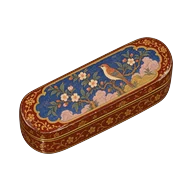
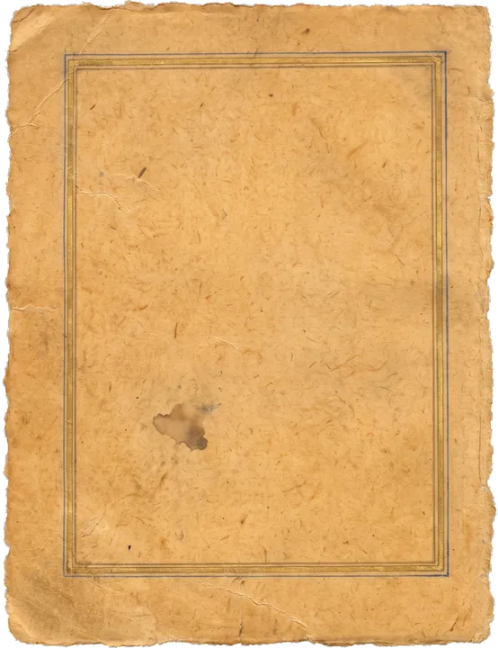
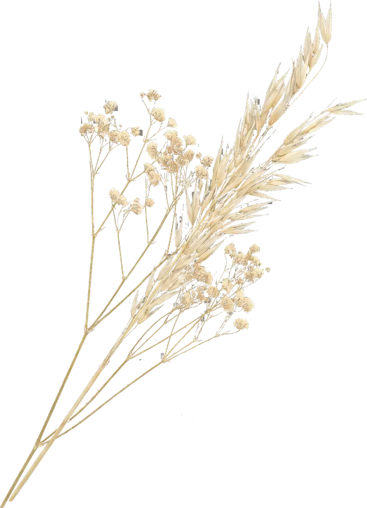
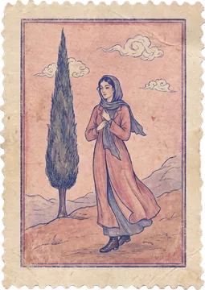
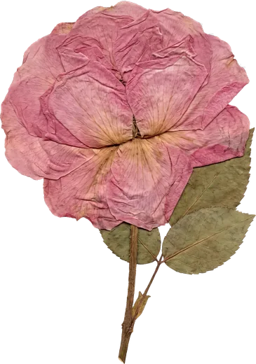
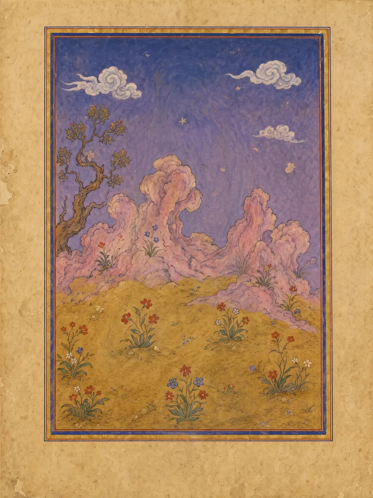
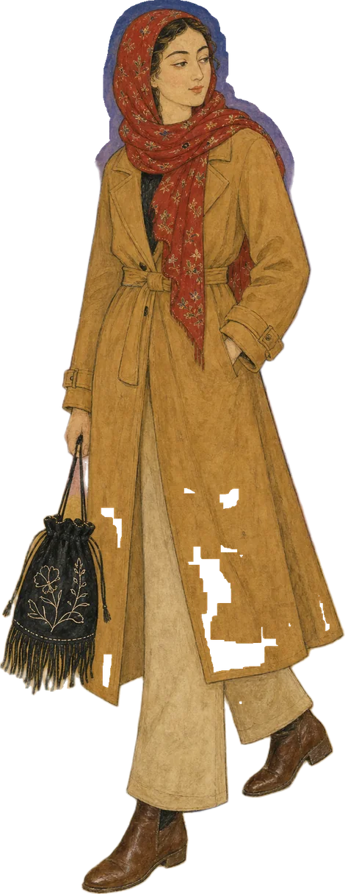
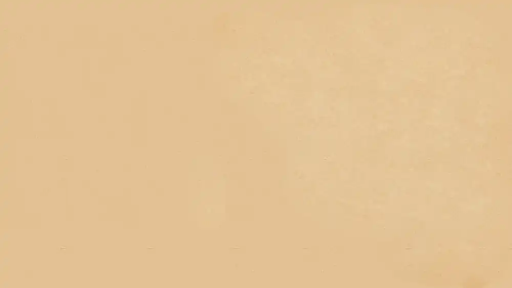
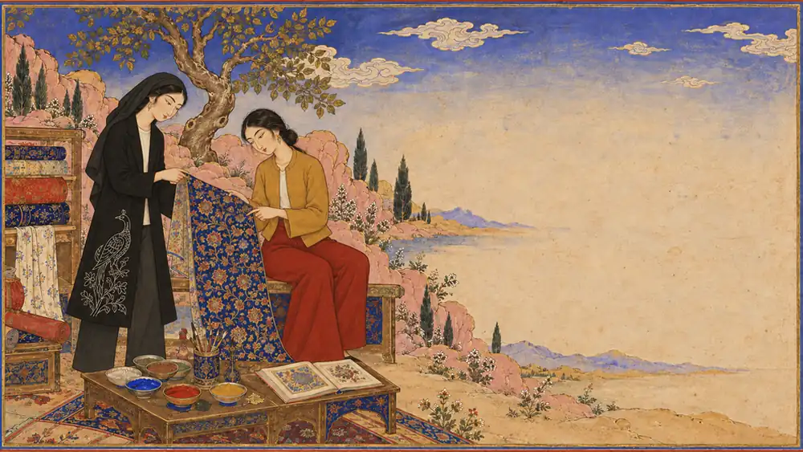
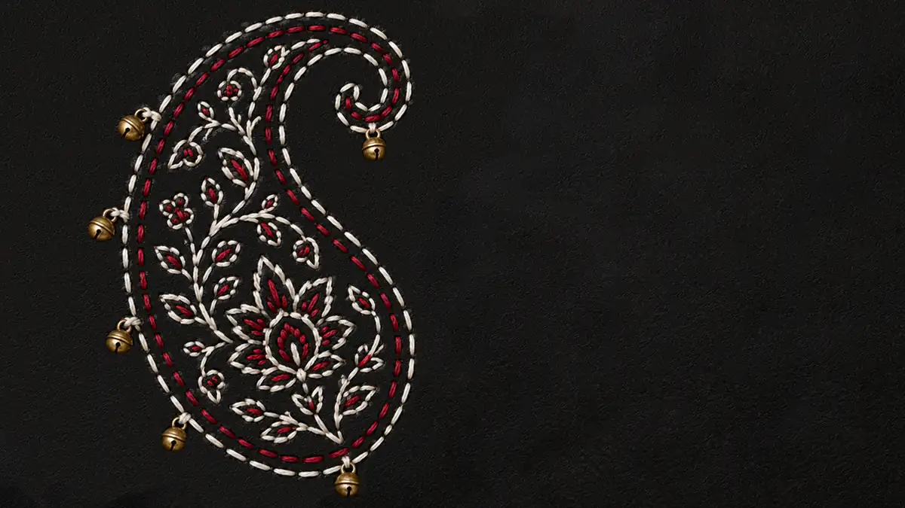

دیو، از نسخه تا ویترین
از خاوراننامه تا کیفهای گلدوزیشده؛ موجودی که از حاشیهٔ نگارهها به طراحی امروز رسید.
۳۰,۰۰۰ تومان
خرید
A Journal of Fashion, Art and Society
مجلهای برای تاریخ، فرهنگ و نقد مد؛ از نگارههای قدیمی تا آنچه امروز در خیابانهای شهر میپوشیم.






The Journal
پژوهشها و یادداشتهایی دربارهٔ تاریخ، فرهنگ و نقد مد. هر مقاله فایل کامل و مصوری است که دانلود میکنید.

از خاوراننامه تا کیفهای گلدوزیشده؛ موجودی که از حاشیهٔ نگارهها به طراحی امروز رسید.
The Editor
اینجا در چند خط از خودتان بنویسید: چه چیزی شما را از نگارهها و پارچههای قدیمی به مد امروز رساند و این مجله قرار است چه نگاهی داشته باشد.
این متن را از پنل مدیریت، بخش «دربارهٔ نویسنده»، عوض کنید.


Why Read
هر ترند را تا نگاره، پارچه و نقشی که از آن آمده دنبال میکنیم.
منبع، تاریخ و تصویر کنار هم؛ مقالهای که میشود به آن ارجاع داد.
لباس را کنار شهر، بدن و روزگارش میخوانیم، نه فقط در ویترین.

مراحل خرید، گام ۱ از ۴
مقاله مورد نظر را انتخاب و روی خرید کلیک کنید.
مراحل خرید، گام ۲ از ۴
مبلغ را به شماره کارت اعلامشده واریز کنید.
مراحل خرید، گام ۳ از ۴
فرم را پر کنید و تصویر رسید را بارگذاری کنید.
مراحل خرید، گام ۴ از ۴
بعد از تأیید، لینک دانلود ایمیل میشود و در صفحه پیگیری هم میآید.
Questions
معمولاً کمتر از ۲۴ ساعت. بعد از تأیید، لینک دانلود ایمیل میشود.
بهصورت پیشفرض ۷۲ ساعت و تا ۵ بار دانلود. اگر منقضی شد، با کد پیگیری درخواست تمدید بدهید.
فایل PDF مصور که روی گوشی خوانا است و میشود چاپش کرد.
بهدلیل ماهیت فایل دیجیتال، بعد از دریافت لینک امکان بازگشت وجه نیست.
مقاله را انتخاب کنید، کارتبهکارت کنید و رسید را بفرستید. لینک دانلود بعد از تأیید برایتان میآید.
رفتن به مجله